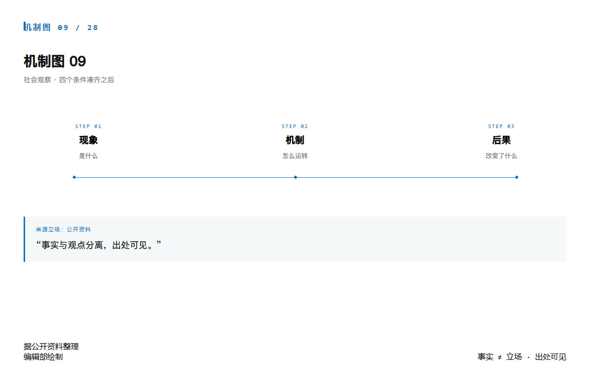

当讲理没用，对轰就成了理性选择
社会观察 · 四个条件凑齐之后
「魔法要用魔法来打败。」这句话被喊出来的时候，讲理那条路已经堵了一阵子了。
具体骂战不转述，也不评价。下面的判断来自公共语料里的策略命名，和对成本收益的结构归纳：写的是它为什么会发生，不是教谁去做。引文照抄网络流行语，具体事件与指控不碰。
但这事和今天的你，有关系。你刷到的性别对立，未必是两边天生更恨对方，而是发声的收益表被改写了。看懂这张表，至少能分清情绪和算计。
对轰不是新发明，弱势叙事用对方的办法反击，历史上一直有。它在此时此地被普遍采用，是因为四件事同时成立：讲理的成本高过收益，默认设定堵住出口，程序结论以年计救不了场，情绪动员的工具链又高度成熟。四个凑齐，个别人的撒气就成了可选项。
这里说的「理性」不是夸人。对轰是算完账之后的选择：讲理零收益，沉默零收益，对轰至少有「让对方也疼一下」的非零收益。一个博弈里只剩这一项正收益，选它的人自然就多。要改的不是人的心性，是那张收益表。
拆掉段子和骂战，策略结构只有三种基本型。一是镜像动员：对方写小作文，这边也写；对方刷话题，这边也刷。二是解构默认：把「这还需要说吗」做成复读体，让免论证的前提重新变得可笑。三是代价展示：不反驳观点，只展示按你的规则你会付出什么。
三型经常混用，还有一个共同点：都不在事实层作战，都在规则层作战。双方往往清楚对方说的事实未必全错，但事实层的裁判，程序、平台、媒体，已经失灵，那就打规则，谁先把对方拖进它自己的规则里出丑，谁赢一回合。这是退化，也是现有定价下的最优退化。
📌 一个值得记住的判断
对轰有效，但不体面，而且有代价。把它写成反击的爽文，只是把站队换了个方向；把它写成堕落的闹剧，又否定了真实存在的表达困境。
回到这套观察关心的那批叙事：他们在默认设定里长期坐被告席，讲道理的通道持续贬值，程序结论又赶不上热搜。三条路都堵着，对轰几乎成了唯一还能听见回声的形态。理解这一点，才能理解性别对轰为何在扩大。
这不是谁变坏了。收益表改写之后，同样的处境会给出同样的选择，跟性别没关系，跟谁先拿到定性权有关系。谁被框成需要自证的一方，谁就更可能抓起对手的武器：不是因为喜欢，是因为够得着。
收益是真的。第一是能被看见，这是现有系统里唯一能换到可见度的手段；第二是短期威慑，习惯单方面定性的人开始计价；第三是群体凝聚，戏谑和梗提供归属感，缓解自嘲的内伤。把这三样说成幻觉，等于没看见真实的困境。
但收益旁边就站着成本。用规则打规则的人同样被规则困住，账号会被冲、被举报、被做成合订本；火力不认个体，只想安静过日子的人反复中弹；事实层的公共品加速枯竭；对轰还会培育更强的对轰。这一页只能算到此，下一页才是完整的账单。
看到这里，别急着把谁当英雄。对轰是止痛药，不是治疗方案。止痛药有它的正当性，但一个只剩止痛药的医疗体系，病灶在体系。骂赢了留不下一条可信的结论，只留下下一场更大的骂战。
写这些不是为了教人怎么打。把策略结构写清楚，只是为了解释它为什么会发生。谁把这段当战术手册读，谁就在把一份社会观察读成武器说明书，那是误读，也是这套观察明文反对的用法。
网络流行语，据公共语料观察
"魔法要用魔法来打败。"
它概括了一种自证策略的自我命名，句式本身是观察对象。

▲ 对轰的触发条件与回路（编辑部绘制）
✍️ 你第一次看到「魔法对轰」是在哪个话题下？
当时觉得解气，还是不对劲？评论区说说。觉得有用，点个赞、点个「在看」，转给也会刷到的人。
下一篇：四张账单摆出来，看看这笔账到底谁在付。
资料来源
「魔法要用魔法来打败」，据公共语料观察，作机制概念使用，指非正式自证与反击策略，并非主张。
四个触发条件、三种策略型与成本收益表为归纳框架，非实证统计；成本发生概率无公开数据。
「性别对轰规模扩大源于收益表改写」为机制推论，非道德评价；具体骂战与个案指控不予转述。
社会观察，不站任何性别立场。事实据公开来源，未证实指控不转述、不评价。拆解规则是为了理解，不是行动指南。
出口：根源在收益表，改变也只能改收益表。可谈的一步，是把澄清与程序性结论的分发收益做上去，让讲理追平对轰。追平之前，任何「别对轰」的呼吁，都是要求一方单方面裁军。